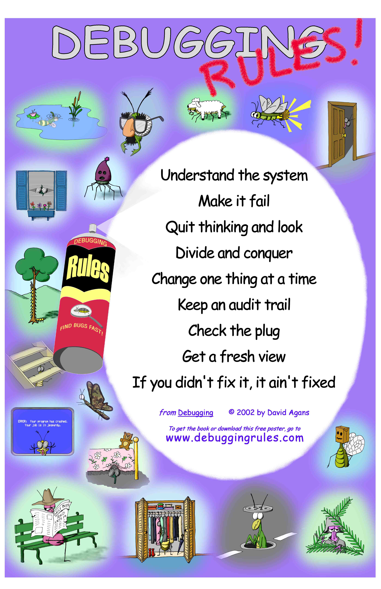

Lab 3 Reflection

A large poster from David Agans hangs in the digital lab where I do my work, pinned right up above my favorite lab bench. I like it a lot – I find myself looking at it only after finding victory against a particularly tricky bug. I like picking out which steps of the process I just went through as I solved my bug. It reminds me that debugging is the other half of the digital design process, and that the seemingly ridiculous steps that one sometimes goes through when debugging are normal.
Intro
Lab 3 was an enjoyable process for me. I enjoy the process and the puzzle that debugging presents, untangling details until you find a missing link. I like fixing small syntax errors which separate a working design from a broken mess, or finding some slight conceptual difference between the idea you had and the implementation you designed. I love finding the nuances in the system.
This love helps me understand why two bugs in particular drove me so crazy during lab 3. I solved both of them, but understand neither. That is maddening – to stumble accidentally across the solution to a puzzle, and to know in your heart that you could not replicate the solution if you tried.
Bug One
The first bug occurred when I implemented my system into hardware. It simulated perfectly and synthesized without error, but the FSM never even began. I tried most everything I could think of – I checked all my default cases, I checked the clock, I checked the state with debug LEDs, I checked to make sure the LEDs were working, I checked to see if the outputs matched any known state, but the only common thread was that something was broken and I couldn’t tell what. The fact that it simulated fine meant that the error was in the translation to hardware. Something about my system was either mistimed or improperly synthesized, such that the machine never even started, and the computer couldn’t catch it. After hours, I decided I would ask my professor, thinking that there was some higher knowledge I lacked which he could enlighten me with. After some time spent understanding my system, he agreed that something seemed wrong with my state registers, but wasn’t sure what. Most frustrating was when he said that my design might be programmed correctly, but that the synthesis software Radiant might be doing some behind-the-scenes magic that was actually breaking my system.
That moment was the most disheartened I had been during MicroPs yet. It felt like I had done everything the way I was supposed to, and had built a functional system, but had drawn the short straw and was told “no”. I had given my best effort at debugging, and been firmly smacked back down. As I slowly started to accept that my next best option was to simply scrap the whole project and rewrite it from scratch, I just kept fiddling with the code. Eventually, it worked. I’m not even sure what I changed. I wasn’t making logical changes – I was just praying that some inconspicuous change in the document would fix the secret synthesis error that Radiant was so devilishly hiding. So it did – one time, when I ran it, the entire system worked perfectly.
I estimate that the error was either with Radiant optimizing away my default cases or mishandling my state register. Or, it is very possible that this first error was caused by the same issue which caused the second terrible horrible no good very bad bug of lab 3.
Bug Two
The second bug that occurred is even more maddening because I was able to pin the bug down to three lines of code. Mind you, four lines of code which should work perfectly normally. Three lines of code which were tied to the same debugging logic that I have been using since lab 1. Three lines which separated a completely broken system from a flawlessly working and synchronized keyboard scanner.
// Working Code
assign led[1] = (rowSenseHold[0]);
assign led[2] = (rowSenseHold[1]);
assign led[3] = (rowSenseHold[2]);
/* Inexplicably Broken Code
assign led[1] = (state==verify);
assign led[2] = (state==hold);
assign led[3] = ((rowSenseHold==4'b0100)&(colScanHold==4'b0100)); */The first thing that irks me about this bug is that I never would have caught it if I didn’t just keep tinkering around and exploring different sorts of errors. This is my debugging output logic, and I had no reason to find it faulty. I had no reason to change it except to learn more about the system. If this sort of error had occurred in a different part of the system that I wouldn’t have changed anyways, then I never would have caught it. It has absolutely nothing apparently connected to the synchronizer inputs which would cause the system to completely fail and lock up the way it did.
The second problem I have with this bug is that I still don’t understand it. Don’t get me wrong – I have some theories. But they’re just that – theories. I spent a long time going back and forth between these three little lines and probing contacts with an oscilloscope to diagnose the issue, but found nothing of note. My current working theory is that I have some small and hidden short circuit on my board which is affecting the pins which control my scanning and state circuit. No other explanation seems plausible to me, other than some wild Radiant synthesis error. These line should have no effect on the state system, and yet they shut down every single part of it. Something about tying the state of these pins into the state of the machine is breaking the system. So, these pins must somehow be shorting to the other pins, or Radiant must be creating some internal short circuit. It could be some other explanation, but I have no worldly idea what that would be.
General Wrap Up
This brings me back to debugging in general. It brings me back to the poster, and the principles it touts. I think that a big one missing is to examine the parts of your system which seem obvious, simple, or unconnected. These assumptions are dangerous since they create a blind spot in your debugging vision. I never would have fixed bug two if not for questioning everything, and going back to basics with my debug logic to check every single piece. It was in the process of checking rowSenseHold, a variable that was so straightforward that I hadn’t even thought to check it before, that I revealed the bug in a wholly separate debug system.
I also think, though, that the poster can be a bit overly optimistic. It carries the hopeful implication that all bugs can be solved with perserverence and new thinking. I think that this is only partly true. It is tricky to square this belief with the sort of Radiant synthesis errors that I may have been encountering. If they were truly Radiant synthesis bugs, then I am lacking the level of higher knowledge necessary to fix and understand them. That’s frustrating. It puts me in a place where I can no longer approach bugs logically. I have to try rewriting bits of code to solve bugs that I don’t understand, in the hopes that I hit the jackpot. If I don’t? Tough. That’s a disheartening thought.
So, my relationship with debugging is growing stronger. I like it more and more, and feel more confident in many ways about debugging a complex system, and doing it efficiently. On the other hand, I encountered two errors that I don’t understand, and that could cripple me in the future. It feels like a dangerous game that I’m playing – how complex can I make my system before a bug that I could never expect and don’t understand brings it to its knees? Now, things change depending on what happened here in lab 3. If I find out a week from now that I really did have a short circuit error, then this entire case cracks open. I am put squarely back on firm footing, and given renewed confidence in my ability to diagnose and test for increasingly complex bugs. If, on the other hand, a similar bug in lab 5 presents itself and my only solution is to restart from scratch, or start taking a hatchet to chunks of code, then I will know that debugging has gotten the best of me this time.
As it stands though, I don’t want to get too into the doom and gloom. The headline here is that I encountered two incredibly complex bugs and still came out with some theories and a working system. Again, I enjoyed the process, and feel more and more like a practicing digital designer with each lab. I’m excited to see what the next chapter brings, and looking forward to dipping my toes back into the world of MCUs and C. Until next time!